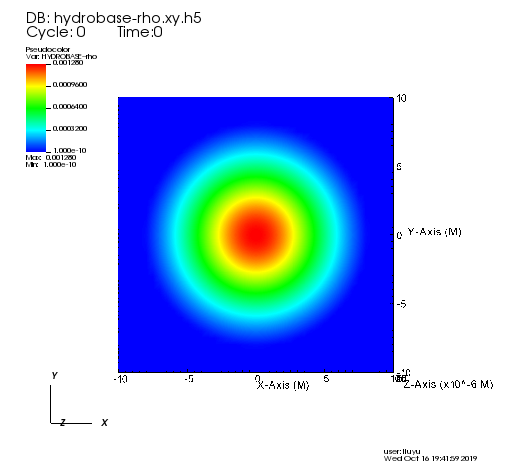

EinsteinInitialData¶
TwoPunctures¶
Create initial for two puncture black holes using a single domain spectral method.
Parameter¶
initial_data
>>> ADMBase::initial_data = "twopunctures" >>> ADMBase::initial_lapse = "twopunctures-averaged"
x coordinate of the m+ puncture
>>> TwoPunctures::par_b = 1.168642873
Mass of Black holes
>>> TwoPunctures::par_m_plus = 0.453 >>> TwoPunctures::par_m_minus = 0.453 INFO (TwoPunctures): The two puncture masses are mp=0.45300000000000001 and mm=0.45300000000000001 INFO (TwoPunctures): Puncture 1 ADM mass is 0.516817 INFO (TwoPunctures): Puncture 2 ADM mass is 0.516817 INFO (TwoPunctures): The total ADM mass is 1.00788 >>> TwoPunctures::target_M_plus = 0.5 >>> TwoPunctures::target_M_minus = 0.5 INFO (TwoPunctures): The two puncture masses are mp=1 and mm=1 INFO (TwoPunctures): Puncture 1 ADM mass is 1.22019 INFO (TwoPunctures): Puncture 2 ADM mass is 1.22019 INFO (TwoPunctures): The total ADM mass is 2.02274
momentum of the puncture
>>> TwoPunctures::par_P_plus [1] = +0.3331917498 >>> TwoPunctures::par_P_minus[1] = -0.3331917498
spin of the puncture
>>> TwoPunctures::par_S_plus [1] = 0.0 >>> TwoPunctures::par_S_minus[1] = 0.0
A small number to smooth out singularities at the puncture locations
>>> TwoPunctures::TP_epsilon = 1.0e-2
Tiny number to avoid nans near or at the pucture locations
>>> TwoPunctures::TP_Tiny = 1.0e-2
Print screen output while solving
>>> TwoPunctures::verbose = yes INFO (TwoPunctures): Solving puncture equation for BH-BH system INFO (TwoPunctures): b = 1.16864 Newton: it=0 |F|=5.965093e-03 bare mass: mp=1 mm=1 bicgstab: itmax 100, tol 5.965093e-06 bicgstab: 0 1.108e-01 bicgstab: 1 1.794e+00 1.082e+00 0.000e+00 7.653e-01 bicgstab: 2 6.591e-01 1.784e+00 4.613e-02 4.422e-01 bicgstab: 3 1.762e-01 6.270e-01 2.198e-01 7.304e-01 bicgstab: 4 3.379e-02 8.500e-01 5.822e-02 4.673e-01 bicgstab: 5 2.122e-02 1.434e+00 2.099e-01 3.589e-01 bicgstab: 6 3.642e-03 2.201e-01 -2.552e-01 1.472e+00 bicgstab: 7 1.834e-04 1.320e+00 -2.380e-01 5.698e-01 bicgstab: 8 3.019e-05 9.020e-01 1.061e-01 8.797e-01 bicgstab: 9 4.272e-06 1.066e+00 2.023e-01 8.797e-01 Newton: it=1 |F|=1.429615e-06 bare mass: mp=1 mm=1 bicgstab: itmax 100, tol 1.429615e-09 bicgstab: 0 2.478e-05 bicgstab: 1 3.864e-04 8.004e-01 0.000e+00 9.045e-01 bicgstab: 2 3.292e-04 3.299e-01 -1.795e+00 7.374e-01 bicgstab: 3 3.818e-05 4.666e+00 4.174e-01 5.876e-01 bicgstab: 4 2.671e-07 7.966e-01 6.221e-01 4.468e-01 bicgstab: 5 3.382e-07 3.000e-01 -2.356e-02 -5.184e-01 bicgstab: 6 2.564e-08 1.757e+00 -2.543e-01 4.898e-01 bicgstab: 7 2.204e-09 2.050e+00 1.840e-01 4.134e-01 bicgstab: 8 1.369e-09 5.025e-01 -6.970e-01 1.143e+00 Newton: it=2 |F|=1.474064e-10 bare mass: mp=1 mm=1 bicgstab: itmax 100, tol 1.474064e-13 bicgstab: 0 1.369e-09 bicgstab: 1 1.547e-09 1.350e+00 0.000e+00 2.500e-01 bicgstab: 2 4.979e-10 1.618e+00 1.750e+00 1.801e+00 bicgstab: 3 9.842e-10 2.868e+00 -3.080e-01 3.455e-01 bicgstab: 4 1.927e-10 7.848e-01 -1.512e+00 3.457e-01 bicgstab: 5 1.320e-10 1.051e-01 1.078e-01 6.606e-01 bicgstab: 6 9.502e-13 1.392e+00 -6.022e-01 1.110e+00 bicgstab: 7 1.404e-13 1.123e+00 -7.421e-03 1.110e+00 Newton: it=3 |F|=8.479620e-14 INFO (TwoPunctures): The two puncture masses are mp=1 and mm=1 INFO (TwoPunctures): Puncture 1 ADM mass is 1.22019 INFO (TwoPunctures): Puncture 2 ADM mass is 1.22019 INFO (TwoPunctures): The total ADM mass is 2.02274 INFO (TwoPunctures): Interpolating result >>> TwoPunctures::verbose = no INFO (TwoPunctures): Solving puncture equation for BH-BH system INFO (TwoPunctures): b = 1.16864 INFO (TwoPunctures): The two puncture masses are mp=1 and mm=1 INFO (TwoPunctures): Puncture 1 ADM mass is 1.22019 INFO (TwoPunctures): Puncture 2 ADM mass is 1.22019 INFO (TwoPunctures): The total ADM mass is 2.02274 INFO (TwoPunctures): Interpolating result
TOVSolver¶
This thorn provides initial data for TOV star(s) in isotropic coordinates. The Tolman-Oppenheimer-Volkoff solution is a static perfect fluid “star”.
Parameter¶
TOV star initial data
>>> ADMBase::initial_data = "tov" >>> ADMBase::initial_lapse = "tov" >>> ADMBase::initial_shift = "tov" >>> ADMBase::initial_dtlapse = "zero" >>> ADMBase::initial_dtshift = "zero"
Set up a TOV star described by a polytropic equation of state \(p=K \rho^{\mathrm{T}}\)
>>> TOVSolver::TOV_Rho_Central[0] = 1.28e-3 >>> TOVSolver::TOV_Gamma = 2.0 >>> TOVSolver::TOV_K = 100.0
Velocity of neutron star
>>> TOVSolver::TOV_Velocity_x[0] = 0.1 >>> TOVSolver::TOV_Velocity_y[0] = 0.2 >>> TOVSolver::TOV_Velocity_z[0] = 0.3
Two or more of TOVs
>>> Tovsolver::TOV_Num_TOVs = 2 >>> Tovsolver::TOV_Num_Radial = 200000 >>> Tovsolver::TOV_Combine_Method = "average" >>> Tovsolver::TOV_Rho_Central[0] = 0.16e-3 >>> Tovsolver::TOV_Position_x[0] = -15.0 >>> Tovsolver::TOV_Rho_Central[1] = 0.32e-3 >>> Tovsolver::TOV_Position_x[1] = 15.0